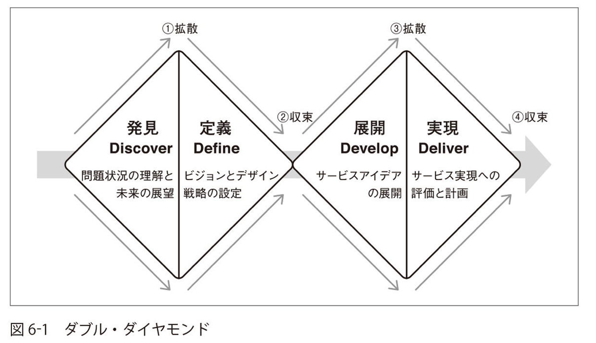
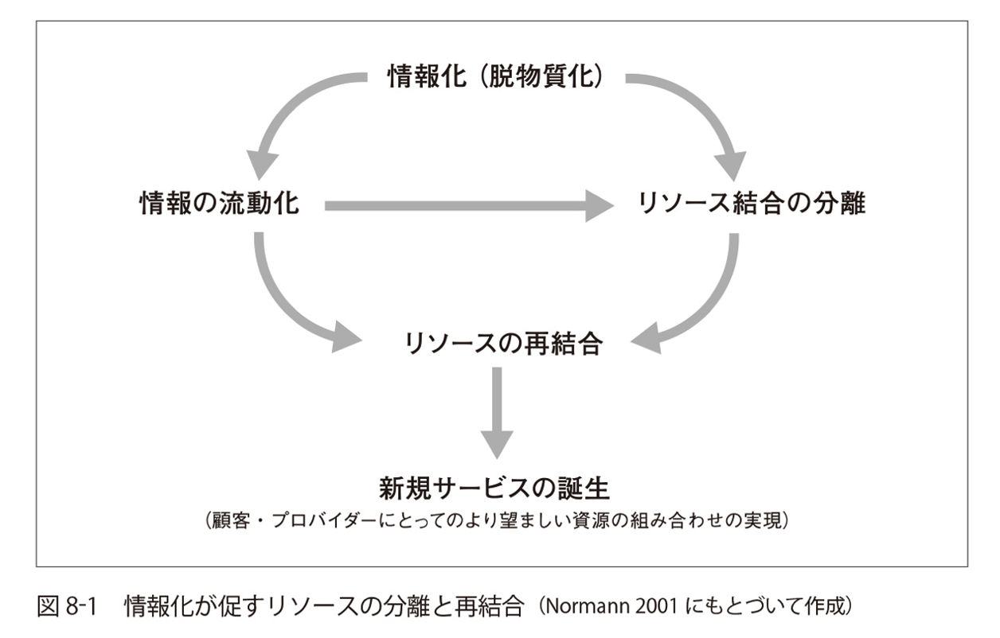

「サービスデザインの教科書」を読んだ
サービスデザインの教科書 / 武山政直著を読んだので感想を書く。
読んだ目的
私は普段いわゆるWebエンジニアとして働いており、作ることそれ自体も楽しいものの、やはり意味のないものは作りたくない、という思いがある。(趣味なら別だが。)そのため、ビジネス書やデザインに関する情報なども積極的にとりいれていきたいと考えていて、今回も「サービスデザイン」を学ぶことで、もっとレバレッジの効いた仕事ができるのではないか、という期待からこの本を読んだ。
総評
具体的な手法にはあまり触れられておらず、主に「サービスデザイン」の意義や歴史についての話が書かれていた。私のようなビジュアルデザインには疎いエンジニアでも十分役に立つ情報が書かれていたと思う。「価値共創としてのサービス」はこれから何かつくるときには意識していきたい。
章ごとのまとめと感想
第1章 サービスの新しい捉え方
この章では、サービスデザインの説明にあたって、まず「サービス」について定義している。 経済学では人間の欲求を満たすもののうち、「モノ」(有形)ではないものを「サービス」と定義しているそうだ。
一昔前まではサービスはモノの付加的な位置付けだったが、だんだんとモノと同等の価値が認識されるようになり、近年ではモノと融合するようなこともおこっている。ナイキのシューズに組み込まれたセンサーを使ってジョギングコーチのアドバイスをうけられるようなサービスが例としてあがっていた。
本には書かれていなかったが、最近はGoogle Home、Alexaといった音声インターフェースのデバイスも進化してきており、より生活に溶け混むようにサービスが展開されるのだろうなと感じた。
この章で重要な概念として、「サービス ドミナント ロジック(S-Dロジック)」というものがある。これは「グッズ ドミナント ロジック(G-Dロジック)」に対比されるような概念だ。以下に概略を書く。
グッズ ドミナント ロジック(G-Dロジック)
- 価値提供に重点をおいた世界観
- 「企業が価値を生み、それを消費者に与える(販売する)」というモデル
サービス ドミナント ロジック(S-Dロジック)
- ユーザーあるいは消費者が財(モノあるいはサービス)を使用することで生みだされる価値に注目
- 例: カフェでコーヒーを飲む
- 「コーヒーを提供する」ことに注目するのではなく、カフェを訪れた客がコーヒーを飲んだときに感じる味わいやくつろぎ、おしゃれなカフェでコーヒーをのむ、というイメージの実感、という価値が生み出されていることに注目する
- 生産者と消費者の対立ではなく、価値を共創している、と捉える
- S-Dロジックではサービスを「自分の能力を他者との価値共創に適用すること」と定義している
以降、この「価値共創」というキーワードがよくでてくる。
第2章 価値共創としてのサービス
「価値共創ビジネスの4つの強み」が書かれていた。
- 成果志向
- 提供する何かではなく、顧客が本当にやりたいことに注目するので、顧客が離れにくくなる
- 持続的な接点
- サービス(とそれを通じた価値共創)が主眼になるので、顧客と持続的に関係をもちやすい
- 多様な文脈への関与
- 多様な顧客と使用価値の創造が求められるので、市場の拡大、協業機会を生みやすい
- 顧客の能力の活用
- 顧客の能力を育成したり引き出したりすることで、より満足度を高めることができる
ヘンリーフォードが言ったとされる、「もし顧客に、彼らの望むものを聞いていたら、彼らは、もっと速い馬が欲しいと答えていただろう。」という言葉を思い出した。顧客が本当にやりたいことは「速い馬」ではなく、「より速く移動できる」という体験のはずだ。モノを作るエンジニアとしては、手段や、これから作るモノ自体に注目しがちだが、本当は何がやりたいのか、というのは常に問い続ける必要があるなと感じた。
また、「顧客満足」を追求することへの危険も書かれていた。
G-Dロジックのマインドセットのまま、「顧客満足」を追求してしまうと、顧客の能力を活用する視点が抜けてしまう。今顧客が何がやりたくて、そのために顧客自身はどんなスキルや時間などのリソースがあるのかを確認しないと、一方的な価値提供になってしまう。
茶の湯の「主客一如」の例が面白かったので是非読んでみてほしい。
第3章 問題解決としてのデザイン
ここでは、デザインが扱う問題とは何か？について説明している。
デザインが扱う問題の性質として「厄介な問題」(wicked problem)という性質があげられている。これは「ある社会システムに関する問題の種類で、上手く構造化がなされておらず、情報が混乱していて、価値意識の対立する多くの依頼主や意思決定者が関与し、システム全体に及ぼす影響も入り組んでいる」という性質だそうだ。変数がたくさんあるような方程式を探索的に解いていかないといけない、という感じだろうか。
この「厄介な問題」に対応する方法として、「フレーム」が紹介されている。フレームとは、期待する結果に対して仮の動作原理を設定することだ。仮説思考に似ていて、仮説として方程式の変数の一つを固定し、期待される結果が導かれるかどうかを見る、という方法だ。フレームが間違っていたら、別のフレームを用いて「リフレーミング」(フレームを適用しなおすこと)を行う。
第4章 デザインモードの社会とビジネス
より顧客志向が求められる時代になるにつれ、デザイン思考が注目を集めている。その中で、IDEOなどデザインコンサルティング会社も登場した。社会は、歴史上何度目かの「慣習モード」から「デザインモード」への移行が求められているそうだ。
- 慣習モード
- 既存の慣習に従う
- 比較的社会が安定している時代に見られる
- デザインモード
- 慣習が役に立たないので、新しい選択肢を求める
- 社会の変化が激しい時代に見られる
- 以下の3つの能力が問われる
- 批判的な精神
- 創造性
- 実践能力
デザインモードをすすめていく中で、「コ・デザイン」が重要になる、と筆者は述べている。これは、エキスパート/非エキスパート、職業としてのデザイナー/非デザイナー関らず、それぞれの経験や知識をもちよってデザインをすすめていく、ということだ。
これは本には書かれていなかったが、顧客との「価値共創」という意味でも様々な顧客に対して、最大限の価値創造を行うには、様々な立場の人の知識が必要になるのだろうな、と思う。また、近年、様々なツール(ビジュアルデザインやプログラミング、音楽、絵画、その他何でも)が作られ、エキスパートと非エキスパートの境界をとりはらうのに役立っているように思う。そういった意味でも誰もが「コ・デザイン」に貢献できる社会になってきたと言えそうだ。
第5章 サービスデザインの歴史
サービスデザインの成り立ちについて書いてあったが、詳細はここでは書かない。
第6章 サービスデザインの実践
サービスデザインの実践手法としては以下の「ダブル・ダイヤモンド」と呼ばれる手法がよく用いられているそうだ。

- 発見(Discover)
- 問題状況の理解を深めるフェーズ
- できるだけ視野を広げ、多くの考え方や、関連する要因を調査する必要がある
- 「デザイン・エスノグラフィー」がよく用いられる
- これは「機会発見 / 岩嵜博論 著」でも紹介されていた。
- 定義(Define)
- フレーミング
- 問題およびその問題に取り組むための計画を明確にする
- 実際の問題の解決策は次の「展開」で考える
- 「デザインブリーフ」を作成する
- 展開(Develop)
- 問題を解決するためのコンセプトを展開していく
- 「ユーザーペルソナ」「ストーリーボード」「ロールプレイング」などの手法が使われる
- 実現(Deliver)
- 「展開」で得られたアイデアをまとめ、実行に移す
また、サービスデザインに取り組むにあたって、以下のような手法が使われる。
- ジャーニーマップ
- サービスブループリント
- ステークホルダーマップ
いずれも価値共創としてのサービスをデザインするためのツールにすぎないことを念頭において、どうしたら顧客の本当にやりたいことを達成できるか、を考えていくことが大事だ。私なりに言い換えると、これらのツールは頭を整理したり新しく発想するために使うのであって、これに沿っていれば回答が自動的にでてくるというものではない、ということだ。
第7章 サービスデザインのケーススタディ
サービスデザインの実例が紹介されていた。いずれも読み物としても面白かったので、読んでみてほしい。
第8章 新たな事業機会の発見
今後の事業機会の発見手法として、顧客のリソースをつなぐ、もしくはリソースの組み合わせを転換するということが書かれていた。例えば、運動しながら音楽を聞く人向けに、運動と音楽に関するリソースをつなぎ、エクササイズ用の音楽ストリーミングサービスを提供する、などだ。他にも、カーシェアサービスなどがリソースの組み合わせ転換の例としてあげられていた。
情報化(デジタル化)が進むことによって、こういったリソースの分離や再結合が促されるとのこと。

また、意味づけを従来と変えることで、顧客にとっての価値をリフレーミングし、新たな事業とすることもよく行われる。本にはでてこなかったが、TwitterやSnapchatが意味づけを上手く利用したサービスかなと思う。
第9章 組織のサービスデザイン
企業がサービスを生み出すにあたり、実際に顧客にサービスを提供する接点となる従業員の体験もちゃんとデザインすることで、価値共創としてのサービスに大きな影響がある、ということが書かれていた。
ナラティブ(物語)として成功事例を従業員と共有することがよい、と書かれていたが、これはサービスを設計するときに、ストーリーボードやロールプレイングが役に立つのと同じような理由だろうと思う。人間の脳には事実だけより、それにまつわる感情なども踏まえて連想的な記憶にしてあげたほうがより残りやすい。
また、サービスデザインに伴って従業員に行動変容を促す必要がある場合の注意点も書かれていた。人間の自然な感情として変化には不安を感じる。行動変容が定着するように、それが習慣になるような方策をとらなければならない。ただ、サービスデザインに限らず、他人に行動変容を促すのは大変だと思う。
第10章 公共のサービスデザイン
政府にもデザインモードが求められている、ということが書かれていた。 実際に、デンマークやイギリス、シンガポールではサービスデザインが公共サービスにもとりいれられているそうだ。
公共サービスの顧客は住民なので、住民との価値共創を目指す、ということになる。住民の本当にやりたいことを引き出すとともに、協力を促す。政府は多様な主体の協働を促進、調整するファシリテーターとして機能する。
日本政府に果たしてそんなことができるのだろうか、というのは疑問だったが、最近も年収850万円以上の所得税増税など、いろいろなところから税金を徴収している以上、住民の本当にやりたいことを見てほしいものだと思う。もちろん私も自分に何かできることがあるなら協力するつもりだ。政府との価値共創、楽しそうだ。